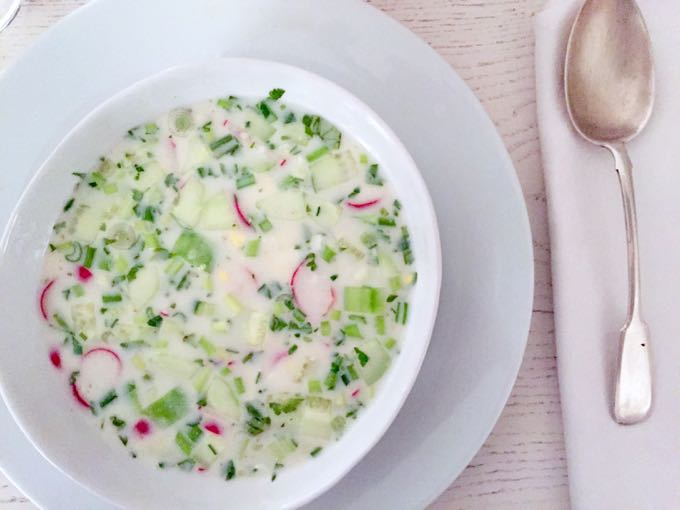

Okroshka

Cold as the Tundra!
This soup is nothing fancy, folks. Just a a nice, light, refreshing, cold soup on a hot day. If you don't like buttermilk, please ignore the recipe.
Ingredients
- 2 cups potatoes - peeled, boiled, and cubed
- 2 hard-cooked eggs, chopped
- ½ cup chopped cucumber
- ½ cup bologna, cut into pieces
- ¼ cup finely sliced green onion
- 3 tablespoons chopped radishes (Optional)
- 2 tablespoons chopped fresh dill
- 2 cups buttermilk, or as needed to cover
Steps
- Combine potatoes, eggs, cucumber, bologna, green onion, radishes, and dill in a bowl. Refrigerate until chilled, about 30 minutes.
- Divide mixture between 2 bowls and cover with cold buttermilk to make a soup.